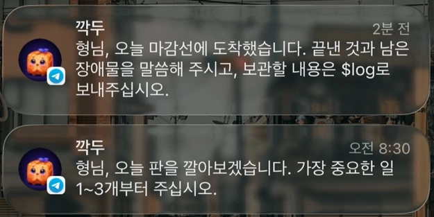

배경: 기록은 필요했지만, 직접 정리하는 일이 부담스러웠다
제가 무엇을 했고 어떤 고민 끝에 결정을 내렸는지 남기고 싶었습니다. 지나간 일을 돌아보며 개선할 점을 찾으려면 결과뿐 아니라 당시의 이유도 필요하다고 생각했습니다. 다만 매번 시간을 내어 기억을 더듬고 글로 정리하는 일은 부담스러웠습니다.
처음에는 Mac 화면 활동과 중요한 대화를 남기는 것부터 시작했습니다. 화면은 Screenpipe로 기록하고, 회의나 중요한 순간의 대화는 PLAUD Note로 녹음했습니다. 이미 생긴 자료를 활용하면 처음부터 빈 문서에 하루를 다시 적는 부담을 줄일 수 있겠다고 생각했습니다.
화면과 녹음만으로 알 수 없는 부분도 있습니다. 어떤 일을 먼저 하기로 했는지, 무엇 때문에 막혔는지는 제가 설명해야 합니다. Telegram 챗봇에는 아침에 우선순위를, 저녁에 완료한 일과 남은 장애물을 묻는 흐름을 두었습니다.

수집 방식 변경: Screenpipe에서 Computer History로
Screenpipe를 쓰면서 저장 용량이 부담됐고, 기록을 살펴봐도 제가 원했던 세부 내용을 충분히 찾기 어려웠습니다. Codex Computer History가 나온 뒤에는 화면 활동의 수집 경로를 바꿨습니다.
일일 기록은 Codex에서 주고받은 작업 내용을 주 근거로 정리하고, 저장된 Computer History 요약으로 보완하도록 구성했습니다. 회의와 중요한 대화는 계속 PLAUD Note로 따로 녹음했습니다. 화면에서 한 작업과 회의에서 나온 이야기는 서로 다른 근거이기 때문입니다.
| 대상 | 처음 시도 | 변경·유지한 방식 |
|---|---|---|
| Mac 활동 | Screenpipe 화면 기록 | Codex 작업 기록 + Computer History 요약 |
| 회의·중요한 대화 | PLAUD Note 녹음 | 별도 수집 경로로 유지 |
| 선택한 이유·남은 일 | 활동 기록만으로는 확인하기 어려움 | 대화와 챗봇 질문에 직접 답변 |
정리 기준도 함께 정했습니다. 페이지를 열었다는 관찰을 작업 완료로 바꾸지 않고, 사용자가 말한 판단과 실제로 확인한 결과를 구분하도록 했습니다. 기록이 없는 시간대는 AI가 채우지 않도록 했습니다.
저장 구조: 채팅 기록 대신 Wiki를 선택한 이유
수집한 자료를 특정 AI와의 대화 안에만 두고 싶지는 않았습니다. 모델이나 도구가 바뀌더라도 제 과거 결정과 그 근거를 찾아 다시 전달할 수 있어야 한다고 생각했습니다.
Karpathy의 LLM Wiki 패턴을 참고해 Obsidian의 Markdown 문서를 저장소로 삼았습니다. 원본 자료는 남겨두고, 새 자료를 기존 주제·프로젝트와 연결해 정리하는 방식을 개인 기록에 적용했습니다. 별도의 모델을 학습시킨 것이 아니라, 다음 대화에서 참고할 자료를 제 저장소에 축적하는 방식입니다.
Raw·Daily·Wiki를 나눈 기준
원문을 다시 확인할 때, 특정 날짜에 무엇을 했는지 찾을 때, 한 주제의 지식을 이어서 볼 때 필요한 정보가 달랐습니다. 이 차이에 맞춰 세 구역의 역할을 나눴습니다.
LLM Wiki/
├── Raw/ 확보한 자료와 출처 원문 — 정리 후에도 보존
├── Daily/ 날짜별 계획·관찰·결정·실행·후속 행동
└── Wiki/
├── Sources/ 출처와 주장, 해석의 범위
├── Concepts/ 여러 자료에서 다시 쓸 개념
├── Projects/ 프로젝트별 판단과 다음 행동
└── INDEX.md 관련 노트를 찾는 색인log는 대화에서 판단·이유·결과·남은 일을 추려 Daily에 남깁니다. ingest는 자료의 출처와 저장 목적을 확인하고 관련 Wiki 노트에 연결합니다. 모든 Daily를 자동으로 지식 노트로 옮기는 방식은 아닙니다.
자료만으로 제 의도를 알 수 없는 경우에는 왜 저장했는지, 어떤 작업과 연결되는지 질문하도록 지침을 뒀습니다. AI가 요약한 사실과 제 생각을 섞지 않는 것도 운영 문서의 기준으로 정했습니다.
참고한 원형: Andrej Karpathy — LLM Wiki. 원형을 바탕으로 개인 기록 분류와 입력·저장 흐름을 확장했습니다.
챗봇 확장: 클라우드 처리와 Mac 파일 저장 분리
Mac에서 실행하는 챗봇은 컴퓨터가 잠들거나 종료되면 정시 실행을 보장할 수 없습니다. 클라우드 이전 구현에서는 메시지 처리와 초안 생성은 클라우드에서, Obsidian 파일 반영은 Mac에서 담당하도록 나눴습니다.
아래는 클라우드 이전 브랜치의 코드로 확인한 구성입니다. 해당 README에는 운영 전환 검증 중으로 명시돼 있으며, 이번 포트폴리오 작업에서 실제 클라우드 운영 전환 완료는 확인하지 않았습니다.

요청 처리와 파일 반영은 따로 완료됩니다
- 요청 접수: Webhook에서 허용된 사용자와 중복 update를 확인하고 Cloud Tasks에 작업을 등록합니다.
- 초안·확인: Worker에서 명령을 분기합니다. 기록 초안은 Gemini로 생성하고, 미리보기와 승인 작업은 Firestore에 보관합니다.
- 로컬 반영: Mac 에이전트가 서명된 요청으로 승인 작업을 조회합니다. 파일을 검사·반영한 뒤 결과를 다시 전달합니다.
사용자가 초안을 확인했을 때의 응답도 “저장 완료”가 아니라 “Obsidian 동기화 대기 중”으로 구분했습니다. Mac에서 실제 파일 반영이 끝나기 전에는 완료로 볼 수 없기 때문입니다. 일일 기록 자동화와 데스크톱 ingest는 이 챗봇 저장 경로와 별도로 동작합니다.
코드 확인 범위: active-composition.ts, runtime-processor.ts, sync-client.ts, local-agent.ts. 그림은 주요 기록 경로에 집중했으며 일정 조회·인증 설정의 세부 구성은 생략했습니다.
저장 통제: 승인한 내용도 파일 상태를 다시 확인
초안을 확인하는 동안 제가 Obsidian 문서를 수정할 수도 있습니다. 승인됐다는 이유만으로 예전 파일 상태를 전제해 내용을 반영하면, 그 사이의 수정과 충돌할 수 있습니다. 그래서 승인 여부와 현재 파일 상태를 따로 검사했습니다.
conflict와 applied는 대안 경로입니다. 해시가 다르면 이후의 파일 쓰기를 실행하지 않습니다. 잘못된 경로·작업 형식은 그보다 앞서 거부합니다. 처리 순서 확대 ↗원본이 바뀌었으면 자동으로 이어 쓰지 않기
승인 작업에는 대상 경로와 예상 파일 해시가 들어갑니다. 로컬 에이전트는 실제 파일을 읽어 해시를 비교하고, 다르면 conflict를 반환합니다. 쓰기 직전에도 한 번 더 검사합니다.
if (job.expectedSha256 !== observedSha256) {
return { status: "conflict", observedSha256 };
}같은 작업이 다시 전달됐을 때는 이미 해당 내용이 반영돼 있는지 먼저 확인합니다. 저장한 뒤에는 파일을 다시 읽어 예상 결과와 일치하는지도 확인합니다. 이 검사는 파일 반영의 안전성을 다루며, AI가 작성한 내용이 맞는지는 원문과 사용자 검토로 따로 판단해야 합니다.
| 상황 | 처리 |
|---|---|
| 확인 전 | 미리보기만 만들고 승인 작업은 생성하지 않음 |
| 파일 해시가 달라짐 | 충돌로 반환하고 기존 파일을 유지 |
| 같은 작업 재전달 | 이미 반영된 내용을 다시 붙이지 않음 |
| 허용 범위 밖 경로·심볼릭 링크 | 작업 거부 |
활용 사례: 저장한 영상 자료를 HASHI 포트폴리오 검토에 사용
자료를 다시 사용한 예가 이번 포트폴리오 작업입니다. Wiki에 저장해둔 AI 개발 워크플로우 영상의 정리와 자막을 찾아보고, HASHI의 문서·코드와 대조했습니다.
입력: 하네스를 다시 검토해야 한다는 영상
저장한 자료 중에는 메이커 에반의 「1년 만든 AI 하네스, 지난달에 전부 지웠습니다」가 있습니다. Source 노트에는 원본 영상, 자막의 한계, 발표자의 주장과 제 해석을 나눠 남겼습니다.
- 원문
- 영상 URL과 한국어 자동 자막의 출처를 연결
- 해석
- 실행 방법을 과도하게 고정하는 장치와 목표·판단 기준을 보존하는 문서를 구분
- 한계
- 발표자의 개선 경험을 보편적인 성능 효과로 일반화하지 않음
재사용: 영상의 개념을 내 구현 범위와 대조
HASHI에서 확인할 수 있는 것은 작업별 문서 안내, 스킬·체크리스트, 생성기와 검증 기준이었습니다. 여러 에이전트가 자동으로 분기·재시도하는 실행 시스템까지 만들었다고 설명하면 실제 구현보다 앞서갑니다. 저장된 자료를 다시 참고하며 이 둘을 구분해 사례를 정리했습니다.
저장한 자료를 다시 찾아 HASHI 사례에서 설명할 수 있는 구현 범위를 정하는 데 사용했습니다.
지금 쓰는 방식과 다음 개선
기록 분류와 정리 지침, 일일 기록 자동화, 챗봇의 미리보기·승인·동기화 코드를 구성했습니다. 실제 알림을 받고 기록을 다시 활용한 경험과, 아직 운영 전환을 확인해야 하는 클라우드 구현은 구분해 보고 있습니다.
2026.09.25에는 ingest-workflow, publish-job, local-sync-agent의 로컬 테스트 8개가 통과했습니다. 확인 전 작업 미생성, 파일 충돌 시 기존 내용 보존, 재전달 시 중복 방지, 허용하지 않은 경로 거부를 검사했습니다. 임시 파일과 대체 모델·저장 인터페이스를 사용한 결과여서 실제 클라우드 동기화는 별도로 확인해야 합니다.
앞으로는 기록량보다 필요한 자료를 다시 찾을 수 있는지, 요약에 제 판단의 이유가 빠지지 않는지를 확인하려 합니다. 모델이 바뀌었을 때 기록을 얼마나 잘 재사용할 수 있는지와 장기 동기화 안정성도 남은 검증 과제입니다.
구현 확인·선별 테스트 실행: 2026.09.25. 직접 사용한 경험과 로컬 코드·운영 지침을 바탕으로 작성했습니다.